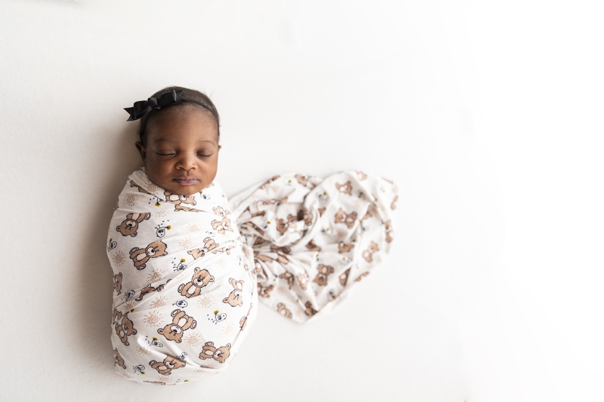

When parents describe their favorite swaddle, they usually mention three things first: softness, breathability, and ease of use. Bamboo-rayon blends are popular because they often perform well across all three.
36| 37|1. A soft hand-feel that stays comfortable
38|Newborn skin is sensitive, so texture matters. Bamboo-derived rayon is known for a smooth hand-feel that feels gentle against skin, especially in repeated swaddling and unswaddling throughout the day.
39| 40|
41| 42|2. Breathability for everyday wear
43|Parents often choose bamboo blends because they feel lighter and airier than heavier fabrics. Breathability can help babies stay more comfortable across changing room temperatures.
44|Comfort still depends on layering and room conditions, so families should always dress baby appropriately for the environment and monitor for overheating signs.
45| 46|3. Stretch for an easier wrap
47|Many swaddling frustrations come from blankets that are too stiff or slippery. A small percentage of spandex in the blend gives a bit of stretch, which helps caregivers create a secure wrap without over-tightening.
48| 49|4. Practical durability
50|Swaddles get washed frequently. Parents usually need fabric that keeps its feel after repeated laundering. Durable stitching and quality edge finishing matter just as much as the fabric itself.
51| 52| 53| 54|5. Versatility beyond swaddling
55|A great swaddle should remain useful after the swaddling stage ends. Families often continue using bamboo swaddles as:
56|-
57|
- Nursing cover 58|
- Light stroller shade 59|
- Burp cloth backup 60|
- Tummy-time layer 61|
- Portable changing surface 62|
The parent checklist before buying
65|When comparing swaddles, check:
66|-
67|
- Fabric blend and stretch 68|
- Breathability and weight 69|
- Stitch quality and edge finish 70|
- Blanket size and versatility 71|
- Care instructions and wash durability 72|
Choosing bamboo is ultimately about daily comfort and consistency. If a swaddle is soft, breathable, easy to wrap, and keeps performing after washing, it earns a permanent spot in the nursery.
75|